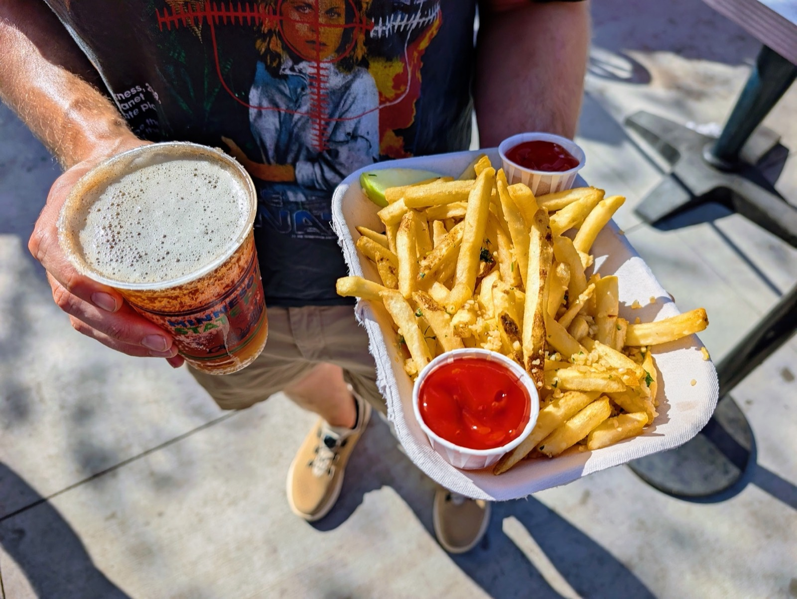
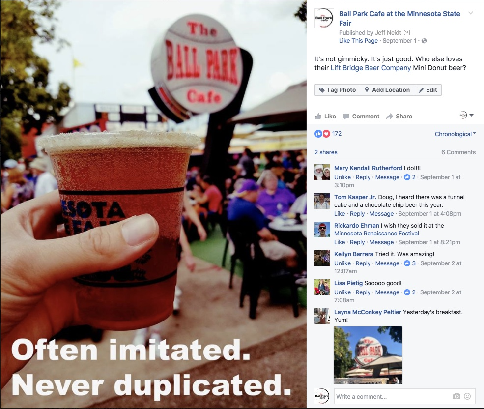
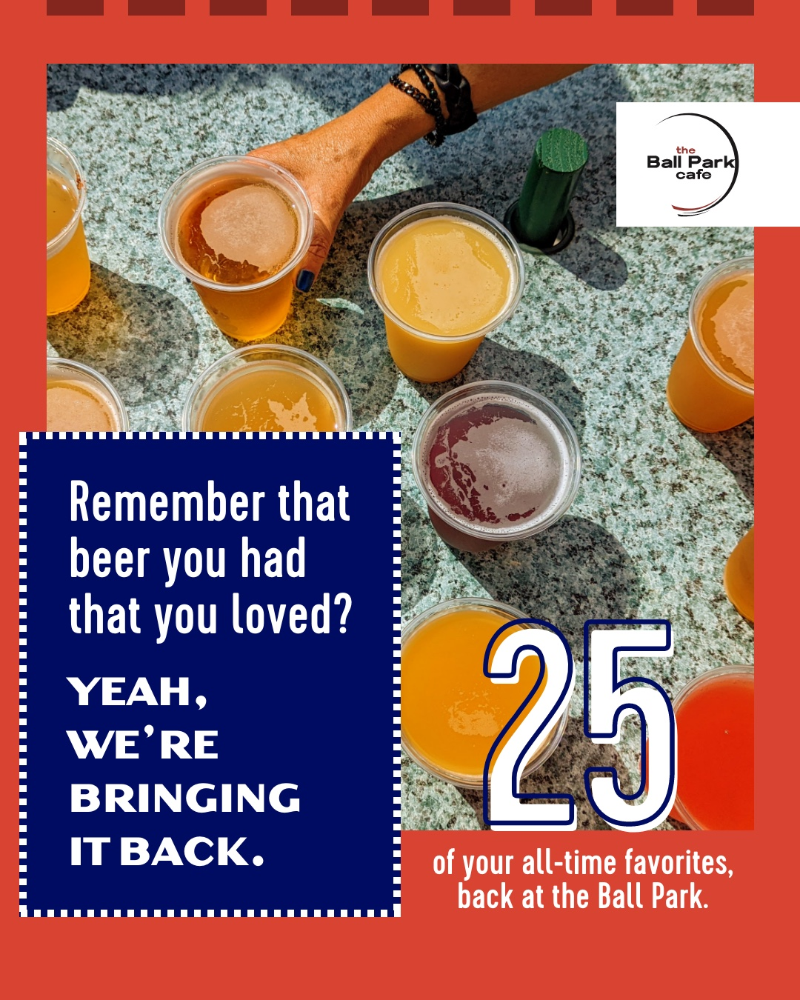
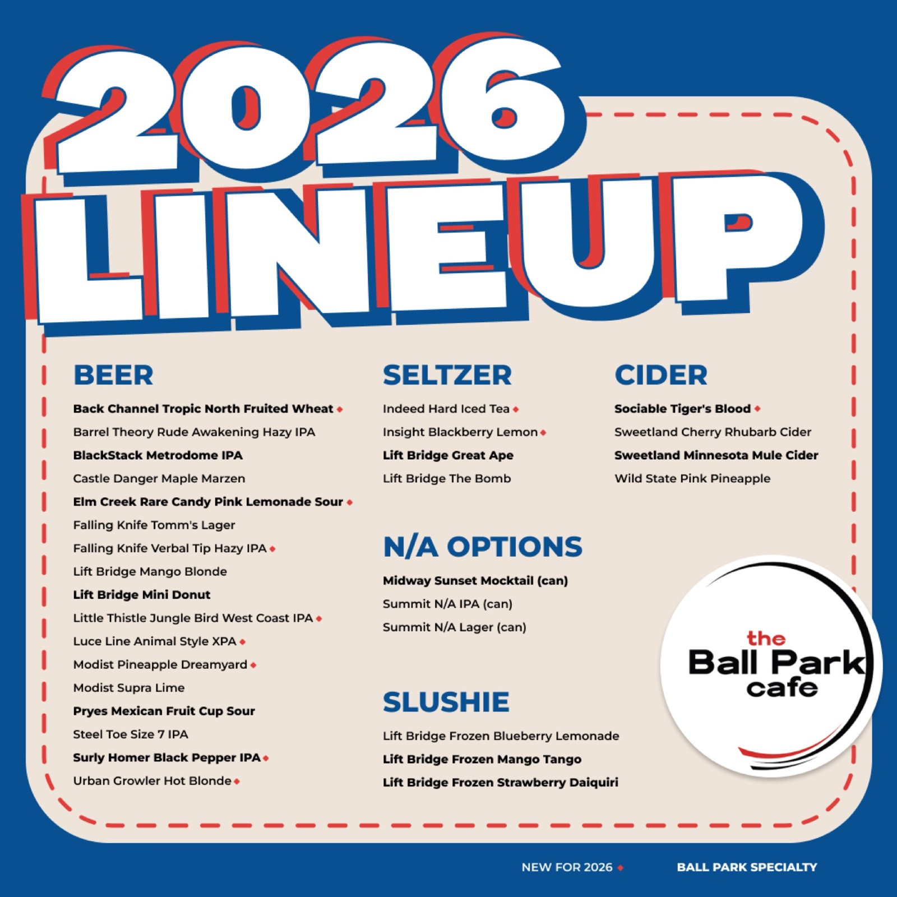
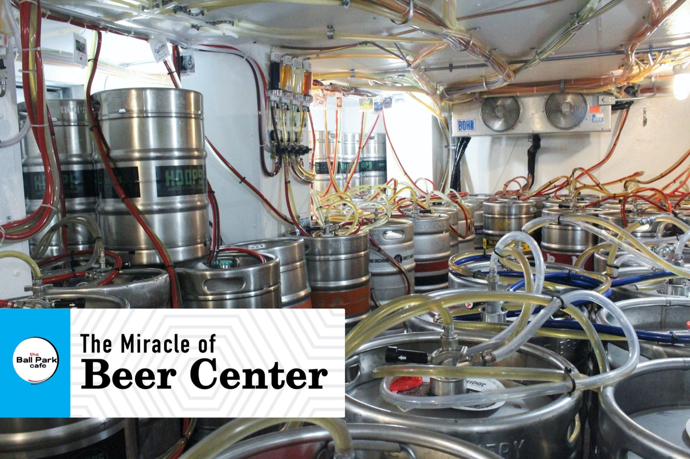
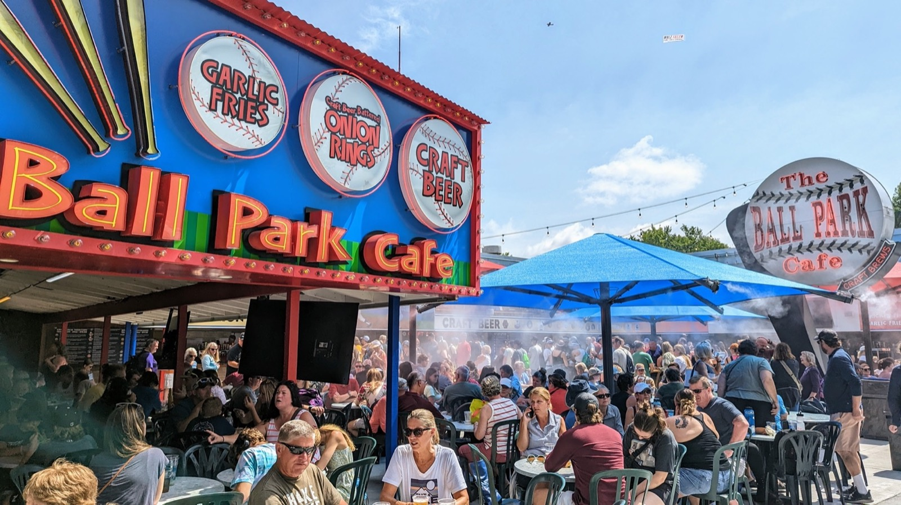
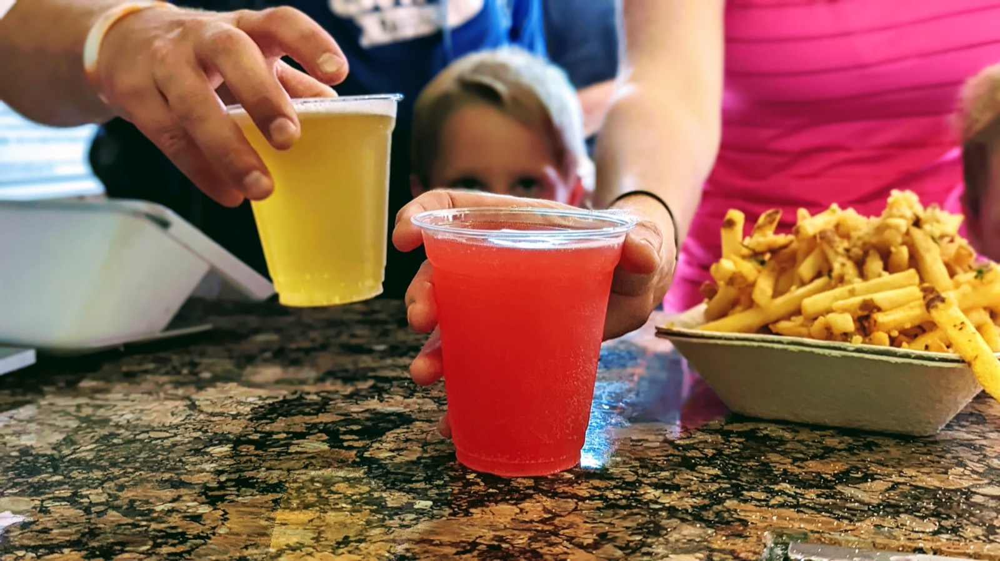

Campaign & Consulting

The Minnesota State Fair used to be awash in generic macro-lagers. But as craft beer arrived at the Great Minnesota Get-Together, the Ball Park Cafe needed to earn its claim to be the best spot to grab a beer.
The State Fair has always been about people bringing their blue ribbon-best to share with the crowd.
A 12+ year engagement that goes way beyond standard advertising. I've shaped awareness campaigns, led local and national media outreach, and coordinated influencer events. More importantly, I partner directly with the state's best makers on tap lists and custom recipe collabs. Together we've built the place to have a beer at the largest state fair in the country. The result? A 3,400%+ social surge, millions of impressions, back-to-back record sales, and a permanent spot in the Million-Dollar Club.





